Introduction
Anscombe dataset
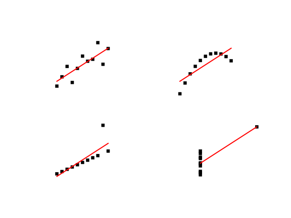
Exploratory data analysis
The greatest value of a picture is when it forces us to notice what we never expected to see.
Visual presentation
Interactive presentation
John Hunter (1968 - 2012)
Patterns over time
Backends
| TkAgg | Qt4Agg | WebAgg |
| 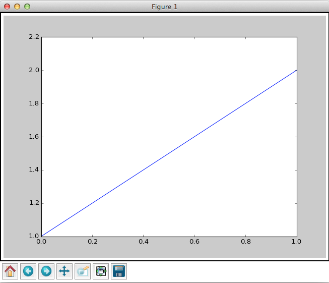 | 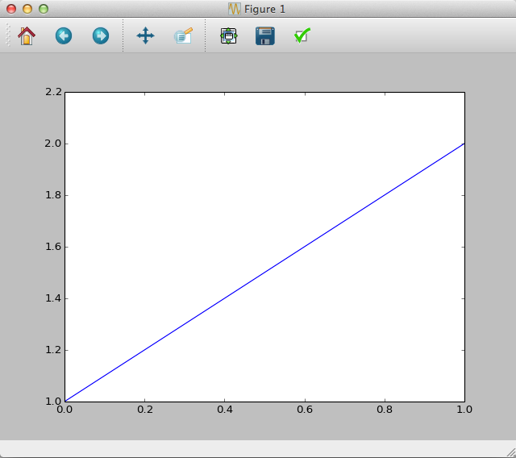 | 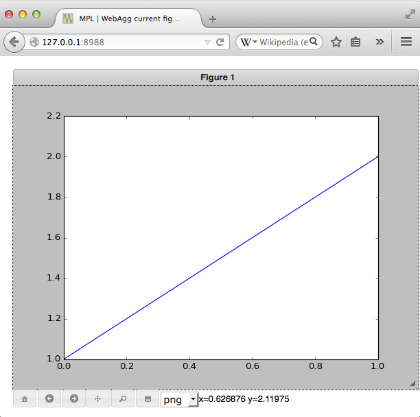 |
Antigrain geometry
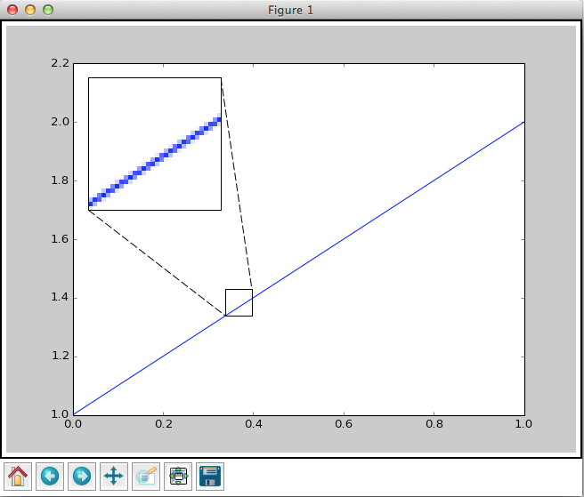| Raster (PNG) | Vector (SVG) |
| 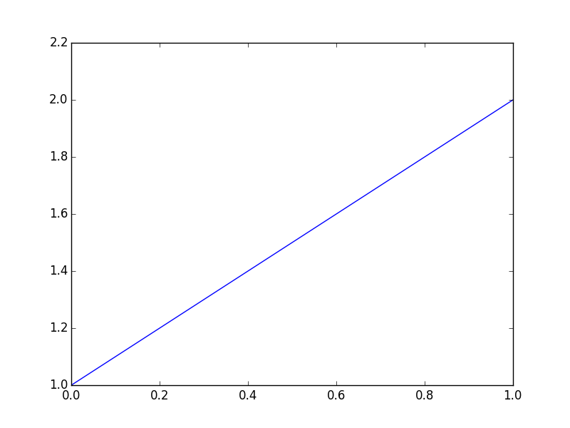 | 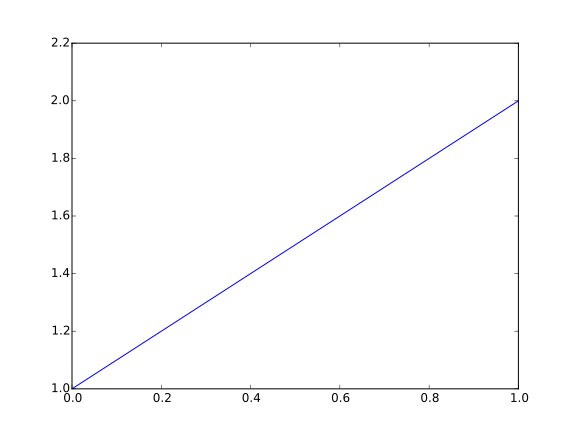 |
pyplot interface
import matplotlib.pyplot as plt
plt.figure()
plt.subplot(...)
plt.plot(...)
plt.show()
pyplot is a stateful interface that handles much of the boilerplate for creating figures and axes and connecting them to the backend of your choice, and maintains module-level internal data structures representing the current figure and axes to which to direct plotting commands.
Recap
plt.plot
plt.show
plt.xlabel
plt.ylabel
plt.xlim
plt.gca
plt.text
xaxis.set_minor_locator
yaxis.set_major_locator
YearsLocator
MonthLocator
Proportions
Artists
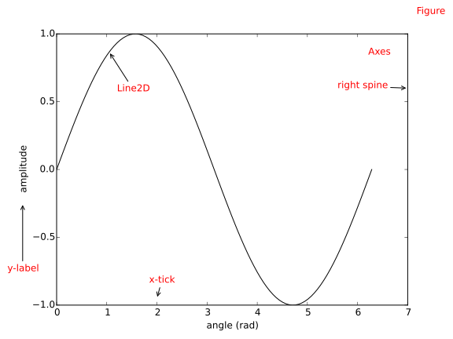 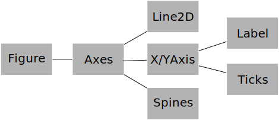Design points
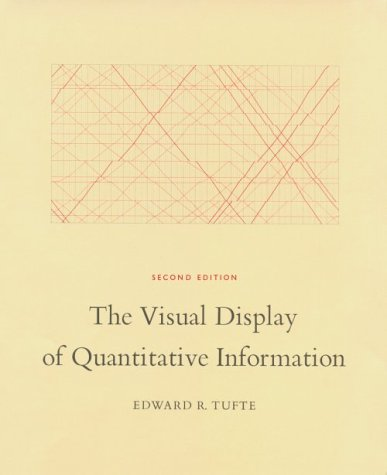Signal-to-noise ratio
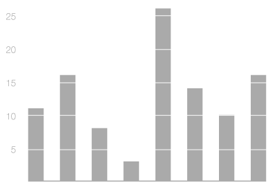Recap
plt.bar
plt.xticks(pos, labels)
Spine.set_visible
Axis.set_ticks_position
Axes.set_axis_bgcolor
plt.grid
plt.title
Distributions
Stem-and-leaf plot
1.1 2.2 2.8 3.2 3.4 3.4 3.5 4.1 4.9 5.5 5.7
| 1. | 1 | |||
|---|---|---|---|---|
| 2. | 2 | 8 | ||
| 3. | 2 | 4 | 4 | 5 |
| 4. | 1 | 9 | ||
| 5. | 5 | 7 |
Boxplots
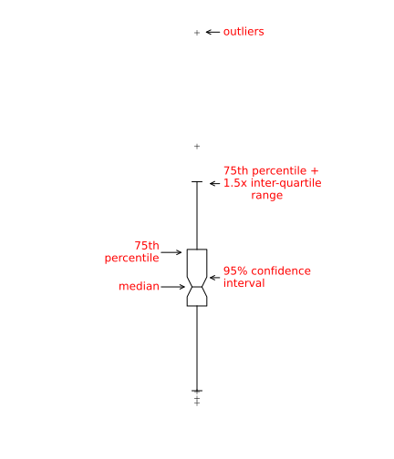Transforms
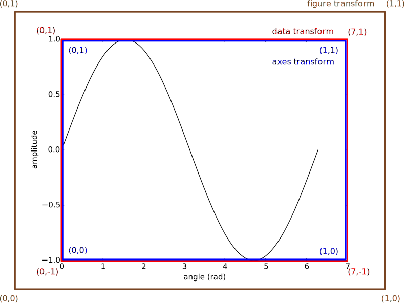Recap
plt.hist
plt.boxplot
plt.legend
plt.text
plt.setp
plt.vlines
Axes.transAxes
Axes.transData
blended_transform_factory
Correlations
Small multiplies
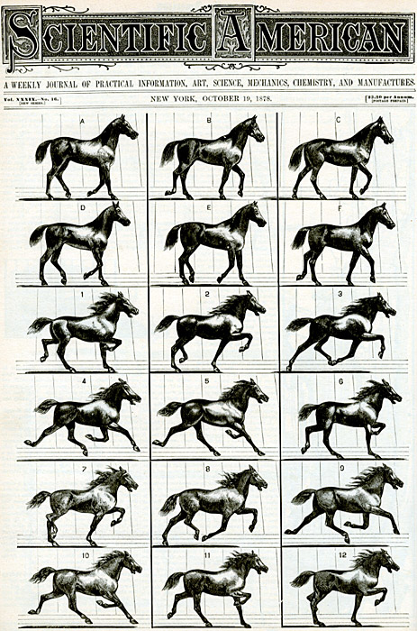Use of color
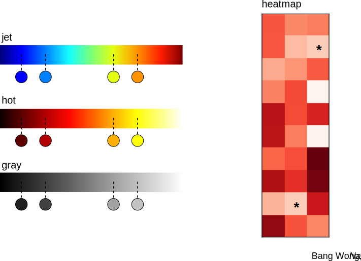Visual illusion
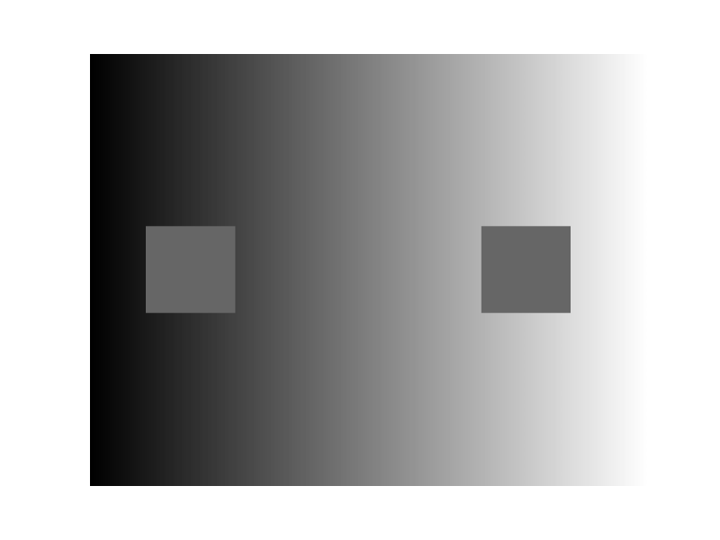Matplotlib colormaps
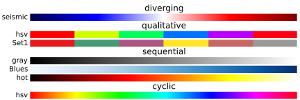Recap
plt.subplots
Axes.set_axis_off
plt.imshow
rcParams
Finding patterns
Principal component analysis
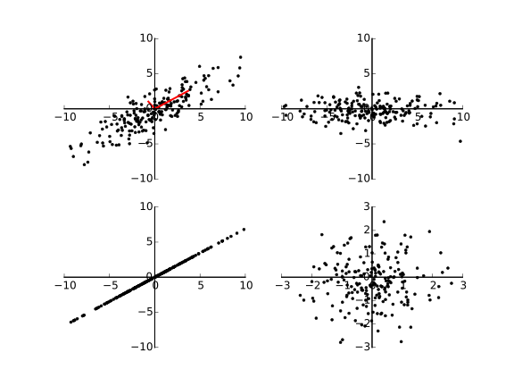K-means clustering
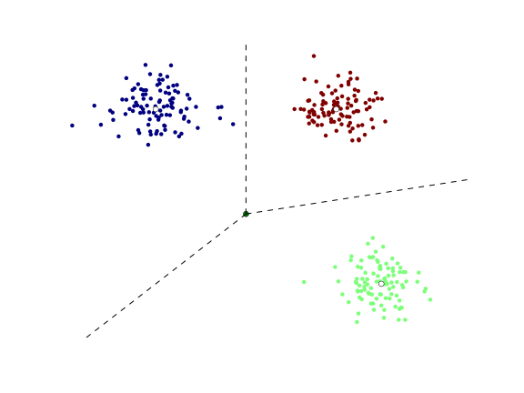Visual encoding channels

Recap
plt.scatter
mcolors.Normalize
cm.get_cmap
Making maps
Map projections
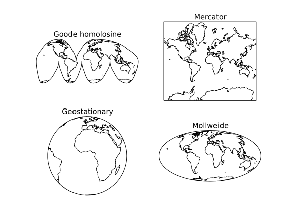Choropleth map
Recap
matplotlib
plt.contourf
cartopy
cartopy.crs
cartopy.io
ax.coastlines
ax.add_feature
ax.set_extent
ax.add_image
ax.add_geometries